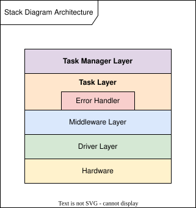

|
AVR SD Safety Framework 1.0.0
|
|
AVR SD Safety Framework 1.0.0
|
The AVR SD family integrates a large set of hardware safety mechanisms that monitor the CPU, memories, clocks, power supply and program execution. These mechanisms are closely interconnected through a central Error Controller (ERRCTRL) and must be configured, diagnosed and serviced correctly throughout the device lifecycle to work as one safety system. The Safety Framework complements the hardware by coordinating these mechanisms through a controlled software lifecycle. From the first instructions after reset, it initializes and diagnoses the safety system, schedules latent fault diagnostics alongside the application under watchdog supervision, centralizes software and hardware error handling and manages Safe State transitions and reset recovery. It also provides the execution flow for the application, so development starts from a working safety system and can focus on the application-specific functionality.
This documentation describes how the framework is designed, configured and integrated. The API Documentation is organized by architecture layer, where each layer describes its components with diagrams before the detailed interface descriptions. Every API and configuration is documented with its valid inputs, preconditions, side effects and safety-relevant notes and warnings. The Software Architecture page is the recommended starting point for understanding the framework. It explains the design goals of the architecture and how the layers work together through the device lifecycle, including watchdog-supervised scheduling, central error handling and reset recovery. It also describes how application software can be designed using the same architecture.
The remaining pages cover specific topics. Optional APIs and Config lists the APIs and configurations that are not used in the default execution flow, such as the Shutdown Task Manager, the optional schedule Tasks and the diagnostics that require application-specific timing. Tips and Tricks describes solutions to specific integration challenges, such as matching the watchdog timing to the application FDTI, changing schedules at run time, extending CRCSCAN to application data, using an external oscillator or repairing ECC errors. Measurements documents the estimated worst-case execution times of the framework Tasks and diagnostics and the maximum stack depth, together with the method used to measure them. These estimates are used as input when selecting Task durations and the stack limit. Example Files contains Main Example, which assembles the Task Managers, schedules and interrupt service routines into a complete application entry point.
The safety and compliance documentation for using the framework in a safety application is provided in the paid Functional Safety Package. It includes the Software Safety Manual, the Software FMEA and DFA, the MISRA C:2025 Compliance Plan and Report, the process assessment summaries and the complete unit test and code coverage evidence. See Additional Documentation for a description of the package contents and how to obtain it.
The Safety Framework is an ISO 26262 ASIL C and IEC 61508 SIL 2 compliant software framework for the AVR SD family, written in C99 and developed as a software Safety Element out of Context (SEooC). It is a dedicated functional safety framework and leaves general MCU functionality, such as communication and application peripherals, to the application. It provides a structured application flow, where application Tasks are added to schedules that the framework executes and supervises while ensuring device-level safety.
The framework is a specific implementation of the Technical Safety Concept described in the AVR SD Family Safety Manual and fulfills several of the Assumptions of Use (AoUs) and software requirements defined for the device. The configuration options in Tasks Config and Error Handler Config adapt this implementation to different application requirements. Most options stay within the device safety concept, while a few allow deviating from a specific Assumption of Use when the application requires it and implements an alternative safety measure. The framework in turn defines its own Assumptions of Use, documented in the Software Safety Manual. These, together with the device AoUs not fulfilled by the framework and the safety measures that depend on the application hardware, such as diagnostics of application-specific peripherals and the external response to the MCU Safe State, are the responsibility of the System Integrator.
For IEC 60730 appliance controls, the AVR SD hardware and the Safety Framework take the place of the Class B libraries available for other Microchip 8-bit MCUs. The AVR SD hardware safety mechanisms are recognized by UL Solutions to IEC 60730-2-5 Class C requirements, and the framework provides the software that configures, diagnoses and handles them.
The Safety Framework aims to make the complete safety capability of the AVR SD family available to every application. Using the device safety mechanisms as one coordinated system requires detailed device knowledge and a substantial amount of verified software. The framework delivers this as a ready foundation, so development can focus on the application-specific functionality, while the framework ensures compliance with the device-level requirements needed to reach higher safety integrity levels.
The framework is designed to be extended without modifying its source. Applications configure the framework and extend it with application Tasks, Middleware and Drivers that follow the same architecture, so the framework source and its verification evidence remain unchanged. Applications with different needs can also use individual Tasks or Middleware directly, or use the framework as a reference implementation. The Software Safety Manual describes the verification impact of each approach.
The Safety Framework is developed according to:
Development follows Microchip's TÜV Rheinland-certified functional safety management system. Independent Microchip functional safety assessors have confirmed compliance with ISO 26262 ASIL C and IEC 61508 SIL 2 through a functional safety audit and assessment at independence level I3, the highest level defined by ISO 26262. An official Automotive SPICE assessment by intacs-certified Microchip assessors has confirmed Capability Level 3 for all assessed processes.
The framework is developed using top-down test-driven development. The unit tests for the highest abstraction component were written before its source code, with the lower layers mocked or stubbed. Each lower layer was then implemented to provide exactly the services required by the layer above. This limits every interface to what its callers require, with no unnecessary functions or parameters, and makes all code testable by design.
The unit tests of each component start with functional tests derived from its requirements. These are supplemented with tests for equivalence classes and boundary values. Code coverage analysis then identifies any code not exercised by these tests, and additional tests are added until every component reaches 100% line, branch and MC/DC code coverage. MC/DC coverage is demonstrated by combining 100% gcov branch coverage with the MCDC Checker, which verifies that every decision in the source code has a structure for which branch coverage is equivalent to MC/DC. Static analysis, integration testing on target hardware, fault injection and timing measurements complete the verification.
The Safety Framework is implemented with a layered Task-based architecture:

The Task Managers control the device lifecycle. After every reset, TM_PreStartup verifies that the device is in Safe State and runs the diagnostics that require device resets, while retaining the original reset reason. TM_Startup then initializes the safety system, runs the remaining startup diagnostics and the application Startup schedule and transitions the device from Safe State into Mission Mode. In Mission Mode, TM_Scheduler services the watchdogs while running the application schedule, with optional Tasks provided by the framework. The optional TM_Shutdown re-enters Safe State and maintains it in deeper sleep modes while the application is inactive, ending in a device reset. Throughout the lifecycle, the Interrupts Task Manager handles the interrupts of the safety mechanisms and reports the errors they signal.
Two concepts are central to the design. The Error Handler combines software errors and hardware error flags into one handling system, where the criticality configured for each Error ID determines the response and also sets the matching Error Controller channel severity. The Scheduler uses the SWDT to give every Task a fixed duration, which makes the total schedule duration fixed and allows the WDT to be cleared inside its open window with no additional timer. With the schedule durations and the WDT window configured to fit within the FDTI, every Task in the schedule is executed at least once within every FDTI.
The Software Architecture page describes these concepts in detail together with reset handling and Safe State management. It also recommends how to design application software using the same architecture, illustrated with a simplified electronic fuse example.
For use in a safety application, the Safety Framework must be compiled with the MPLAB® XC8 Functional Safety Compiler. The supported devices, compiler version and Device Family Pack (DFP) version are listed in the Release Notes for each release, together with the Flash and SRAM footprint measured for a reference build with all optional features enabled. The framework uses no dynamic memory allocation. Known issues at the time of release are listed in the Release Notes. Issues and documentation errata identified after a release are published in the Known Issues List, which is maintained separately from the release packages.
The framework complies with the Assumptions of Use in the MPLAB XC Compiler Functional Safety Manual, which also apply to the application build. The delivered verification results apply to the compiler and DFP versions listed in the Release Notes. Using a different version requires an assessment of the impact on the Safety Measures, as described in the Software Safety Manual. Each release also contains a release manifest that records the tool versions and build settings used for verification, and a checksum file for verifying that the delivered files are unmodified.
The Safety Framework is not designed to be compiled with zero optimization (-O0), since the source code prioritizes readability and clarity and relies on the compiler to optimize it. Each source file compiles at -O0, but the complete framework exceeds the Flash capacity of the AVR32SD32, and MW_ConfigErrorChannels cannot configure all Error Controller channels before the CONFIG state times out. To debug at -O0, compile only the files being debugged at -O0, and compile midware_error_manager.c and the remaining files at a higher optimization level.
The Functional Safety Package for the AVR SD Safety Framework (Microchip Direct product AVR-SD-SAFETY-FRAMEWORK) contains the documentation needed to use the framework in a safety application. The central document is the Software Safety Manual, which documents all implemented Safety Measures together with the Assumptions of Use and responsibilities of the System Integrator. It also documents compliance with the MPLAB XC Compiler Functional Safety Manual, the AVR SD Family Safety Manual and the applicable ISO 26262 and IEC 61508 requirements. The framework should only be deployed in a safety application after reviewing the Software Safety Manual and the Software FMEA and adhering to the Assumptions of Use.
The package contains:
The full ISO 26262, IEC 61508 and ASPICE audit and assessment reports are available on request. The package is available on Microchip Direct.
A safety application on the AVR SD family also relies on the device-level Safety Manual and FMEDA, available in the AVR SD Device Functional Safety Packages for ISO 26262 and IEC 61508, and on the MPLAB XC Compiler Functional Safety Manual, available on Microchip Direct.
The framework source code is available free of charge from the AVR SD product page.
The Software FMEA analyzes how the framework can fail and how it can be misused. It covers implementation errors, design limitations and random hardware faults, together with the configuration and usage errors that the application can introduce. Each failure mode is traced to its effects, its detection mechanism, the Safety Measures and Assumptions of Use that mitigate it and the contingency actions that limit its effect. The Safety Measures and Assumptions of Use are referenced by their IDs in the Software Safety Manual, and each failure mode is rated before and after mitigation. Failure modes that create shared dependencies or cascading failures are analyzed further in the Software DFA.
The MISRA C:2025 documentation follows MISRA Compliance:2020. The Compliance Plan defines how every guideline is categorized and enforced, how the analysis tools are configured and validated and the competence, review and CI/CD controls that apply to every change. The Compliance Report records the compliance status of every guideline together with the supporting tool results and justifies each approved deviation with its rationale and a documented risk assessment. Together with the delivered tool configuration files, this allows the framework to be integrated into a MISRA-compliant application, with evidence that can be referenced directly in the application compliance documentation.
The static analysis results are delivered with their classifications. Every finding reported by Coverity is recorded either as intentional, with a justification, or as a false positive, with the reason for that classification. The source code is also measured against the HIS Source Code Metrics as an additional indicator of code quality and maintainability. Cyclomatic complexity, path complexity, statements per function, number of parameters, call depth, goto statements and recursion are within the HIS reference ranges for every function. For the remaining metrics, the HIS Metrics Statement documents the reasoning for each value outside its range, and no reported value remains open at release.
The framework source code, including Main Example, is available free of charge from the AVR SD product page. Start by building the example with the default configuration on an AVR32SD32 Curiosity Nano. It runs the framework lifecycle from TM_PreStartup through TM_Startup into Mission Mode, where TM_Scheduler executes the example schedule with the optional framework Tasks. From there, the framework is adapted to the application in three steps:
Integrating Application Software describes how to design the application Tasks, Middleware and Drivers top down using the same architecture, and lists the integration steps.
The watchdogs are the most common cause of unexpected errors and resets during development, so reading Watchdog-Supervised Scheduling before adding application Tasks saves time. The two watchdogs detect different timing errors:
A Task duration is given in system clock cycles, with the default configuration using a 20 MHz main clock, and only needs to exceed the worst-case execution time of the Task, including interrupts and error handling. During development, a new Mission Mode Task can start with a generous duration taken from DUR_EXAMPLE_PADDING, so the total schedule still reaches the WDT open window, and the SWDT reports an expiry if the duration is too short. The final durations must be based on the measured execution time of each Task, plus a margin. See Measurements for a high-level description of one method for measuring execution time.
The example files include callbacks for non-critical errors, notification errors and reset reasons, configured in Error Handler Config and Tasks Config. Each example callback stores its input in a volatile variable, making it a convenient breakpoint location. Since all Error IDs are NOTIFICATION by default, every reported error reaches EH_NotificationErrorExampleCallback when T_HandleNotificationErrors runs in the schedule. After a reset, T_ResetReasonExampleCallback receives the original reset reason and, for a software reset, the Error ID that caused it. Together, these two callbacks identify most problems during early integration without adding logging to timing-sensitive code. Logging from inside a Task or callback, such as printing over a serial interface, extends the Task execution time and typically exceeds the configured duration, causing the SWDT to expire.
Due to limitations in the debug interface, a breakpoint in a callback may not trigger, or the watched variable may not show the stored value. If this occurs, add a break instruction at the end of the callback:
The debug session halts on the line above the break instruction. Step Into once, then read the value stored by the callback, in this example the prevResetInfo struct. Remove the instruction when debugging is complete. Without an active debug session, it is executed as a NOP, but on a locked device it is treated as an illegal opcode, which triggers a Non-Maskable Interrupt and a device reset.
The Pre-startup diagnostics reset the device several times before Startup begins, so a debug session can also halt on these resets before the device reaches Mission Mode. This is expected, and T_ResetReasonExampleCallback receives the original reset reason that preceded the diagnostics.
Routing the Error Controller heartbeat to an LED is a simple first extension that shows when the device enters Mission Mode. The Error Controller can output a 1 kHz heartbeat signal on an I/O pin, intended for an external monitor that detects when the device leaves normal operation. On the AVR32SD32 Curiosity Nano, the heartbeat can be routed to the dual-color red/green LED on PF5. The LED shows red while the heartbeat is stopped, for example before Mission Mode or after entering Safe State, and orange in Mission Mode, where the heartbeat alternates the LED between red and green at 1 kHz. Set HEARTBEAT_OUTPUT to ENABLED and add a Startup Task to appStartupSchedule that routes the heartbeat to PF5:
T_StartMissionMode starts the heartbeat at the end of Startup, so the LED changes from red to orange when the device enters Mission Mode. With the default configuration, Startup completes too quickly for the red indication to be visible.
Increasing DUR_INIT_STATUS_INDICATOR can make the transition visible, and also shows how the Startup timing is supervised. With a duration of, for example, 3000000 cycles, or 150 ms at 20 MHz, Startup exceeds the WDT timeout configured by INIT_WDT_DURATION, about 4 ms by default. The LED stays red and the device resets repeatedly, and after each reset T_ResetReasonExampleCallback receives RSTRSN_WDT_TIMEOUT. Setting INIT_WDT_DURATION to WDT_TIMEOUT_CLK8K, for a timeout of about 250 ms, then lets Startup complete, and the LED visibly changes from red to orange. Restore both values afterwards.
As a next step, add a Mission Mode Task to appSchedule that toggles LED0 on PD2, giving a second visible indication that the schedule is running. Use the same Driver, Middleware and Task structure, with a duration taken from DUR_EXAMPLE_PADDING.